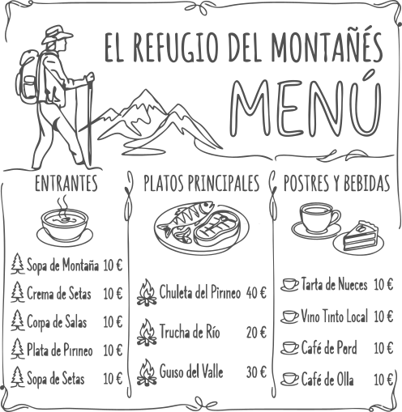

Cascada Juan Curí
A unos 22 km de Casa El Cedro se encuentra esta maravilla natural de 200 metros de altura. El lugar funciona como un parque ecológico privado donde la conservación y la aventura van de la mano.
Ubicación
A unos 40 km desde el hotel Casa el Cedro y 1200 msnm.
Altura
Impresionante caída de agua de 70 a 80 metros de altura rodeada de selva húmeda.
Qué llevar
Calzado de buen agarre, repelente, bloqueador, traje de baño y ropa de cambio.
Senderismo
Caminata ecológica de 20 a 30 minutos por senderos naturales hasta la base de la cascada.
Torrentismo
Descenso de 70 metros por la pared de la cascada con equipo certificado y guías expertos.
Pozos Naturales
Piscinas naturales de agua cristalina ideales para nadar y refrescarse tras la caminata.
Avistamiento
Observación de aves nativas. Se recomienda traer binoculares y usar la app eBird.
Servicios
El parque cuenta con parqueadero, lockers, baños, vestidores y zona de descanso.

Restaurante
Gastronomía local santandereana. No te pierdas los famosos chorizos de la región.